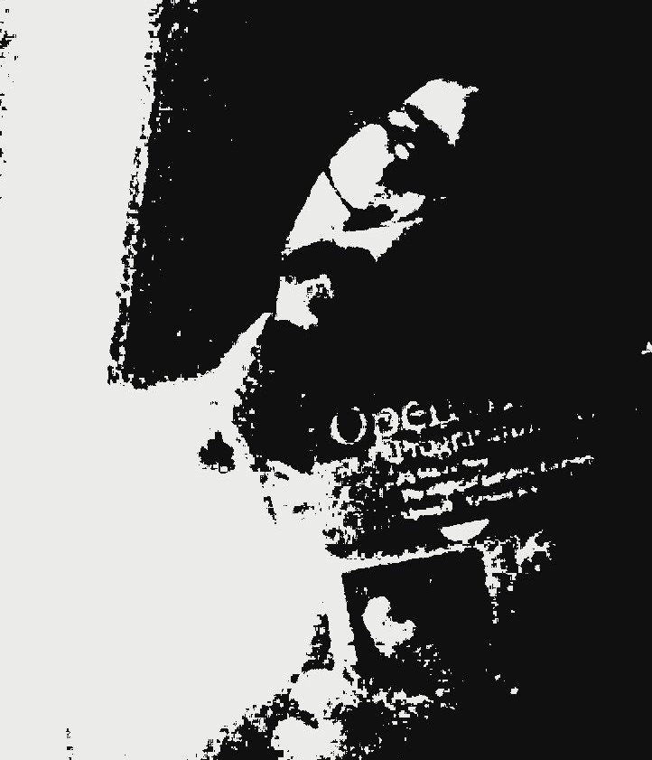
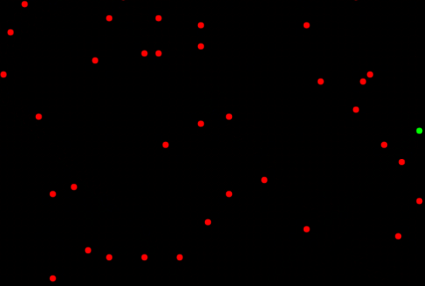
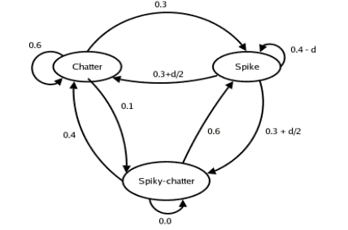

- Name: Mayur Hemani
- Profession: Computer Programmer
- Looking for: Peace in life (42), a PhD. advisor, and always up for a good south-Indian meal..
Happy New Year
Let the year 2015 be a good one. Is that a piece of cloth or a spiral? Look closely.. which direction does it rotate in? Does it change as you watch?
Birds Flocking Behind a Leader

The world begins with chaos. Birds muck about the world, banging their heads against the wall. Then when they come in contact with a leader, they begin to follow him. Sure enough, the world becomes polarized and organized. But some, followers go out of phase and the chaos returns. And so on in cycles. There must be truth in what he says...
Preferential Attachment Gone Bad

My first ever venture into research... done with ICWSM 2007 dataset. The general idea is that too many cooks spoil the broth.. or in this case, improve the overall discoverability of the long tail.
How numbers color our world

The 3D visualization of where the colors of an image figure in the L*A*B* world (statistically). Pixels are translated to the L*a*b* space and clustered by k-means (k=5). The RGB gamut mapped to LAB coordinates are then used to visualize the positions of these pixels.